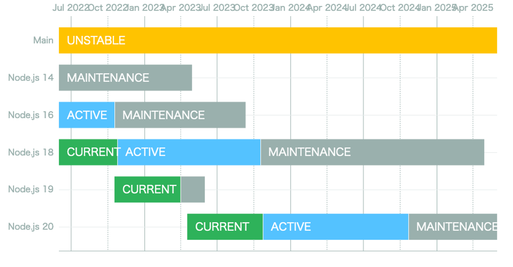

Corepackを使ってNode.jsをアップデートする ⬆️⬆️
自己紹介

- Name : azu
- Twitter : @azu_re
- Website: Web scratch, JSer.info
[.background-color: #FFFFFFF]
Node.js 14は2023年4月でEOL

- Node.js 14.xは2023-04-30、Node.js 16.xは2023-09-11でEOL(End Of Life)
- 2023年10月からはNode.js 18と20のみがLTSとしてサポートされるバージョンとなる
- https://github.com/nodejs/release#release-schedule
サマリ
- Node.jsのバージョンアップは面倒だけど
- ほとんどのBREAKING CHANGEはライブラリにある
- npmのバージョンアップは面倒
- npm 6とnpm 7とnpm 9では
package-lock.jsonのフォーマットが異なる - npm 6とnpm 8(8.6.0)では
peerDependenciesの扱いが異なる
- npm 6とnpm 7とnpm 9では
- corepackはnpmパッケージ管理ツールのバージョン管理ツール
- 現代はnpm 6,7,8,9、yarn 1,2,3、 pnpmが混在する時代

どうやって"Node.js"のバージョンを上げるか
- まとめてあげるには、アプリケーションは大きくなりすぎた
- 問題を分解する
- Node.js / パッケージマネージャー(npm) / ライブラリの問題を分解して考える
- これに役立つのがcorepack
Node.jsとパッケージマネージャーとライブラリの問題を分解する
まずは問題を洗い出す
- 何も考えずにNode 18に上げる
- ライブラリの問題の9割ぐらいはインストール時にわかる
- Runtimeレベルの問題は、Node.jsの問題
- ここは基本的には問題が起きにくい(DeprecatedなAPIの削除やFetch APIの追加などが主)
- 大量にハマるので、インストールしてテストが動くまでごちゃごちゃする
- 見つかった問題を分解していく
問題の分解
- OSの問題
- Native Addonの問題
peerDependenciesの問題- Node.js Runtimeの問題
OSの問題
OSの問題
- Node.js 18はglibc 2.28+を利用する
- Ubuntu 18.04では動かないため、Ubuntu 20.04+が必要
- そのため、Node.js 18にアップデートする場合はUbuntu 18.04は避ける
CIとOS
- CIサービスが提供する環境で、Node.js 18を含むバージョンを使う
- Circle CI: ubuntu-2004:2023.02.1 or ubuntu-2204:2023.02.1
- GitHub Actions: Ubuntu 22.04 or Ubuntu 20.04
- より良い方法は、Node.jsバージョンを指定して使うこと
- Circle CI: cimg/node
- GitHub Actions: setup-node
DockerとOS
- 公式のイメージがあるのでそれを利用するだけ問題ない
- node - Official Image | Docker Hub
OSの問題まとめ
- UbuntuならUbuntu 20.04+が必要
- CIではできるだけNode.jsバージョンを指定できる方法を使う
- Dockerではnode - Official Imageを使う
Native Addonの問題
Node.jsとPython(gyp)
- Node.jsにはC++ addons(native addon)という仕組みがある
- fseventsやnode-sassなど著名なライブラリが使ってる
- C++で書いてNode.jsにバインディングを提供できるので、高速な処理に使われる
- Node.js <-> C++ は Node-API という抽象レイヤーがある
- Node.jsをアップデートすると問題が起きやすい
gyp ERR!
gyp ERR!
gyp ERR!
gyp ERR!
gyp ERR!
gyp ERR!
gyp ERR!
gyp ERR!
gyp ERR!
gyp ERR!
gyp ERR!
- Node.jsではNative Addonのrebuildにはnode-gypというツールを使う
- node-gypはPythonに依存しており、Native AddonのrebuildにはPythonが必要
- Node.js 14まではPython 2が利用可能で、Python 16以降はPython 3が必要になる

apk add python
- つまり、Node.jsでは、OS内にPythonをインストールする場合は、Python 3が必要
apk add pythonではPython 2がインストールされるので、python3へと変更がいる
RUN apk --no-cache add python3 make g++
gyp ERR! の対応
- 基本的には古いバージョンのライブラリだと起きやすい問題
- (ライブラリが更新されていれば)ライブラリのバージョンを上げることで、大体修正されている
GCPライブラリとgRPC
- 古いGCPのクライアントライブラリは
grpcを利用していた grpcはNative Addonのパッケージ- インストール時にNode.jsバージョンに合わせたプレビルドのバイナリをダウンロード(当然Node.js 18用は存在しない)
- なければ、ローカルでgypを使ってrebuildする
- 最近のバージョンでは@grpc/grpc-jsを利用している
- JSの実装なので、gypの問題は起きない!
- → Node.js 18では、GCPライブラリは@grpc/grpc-jsを使ってるバージョンまでアップデートが必要
バイナリを利用するライブラリ(Optional Depencies)
- esbuildやRomeなどバイナリを使うツールも増えている
- これらはOptional Dependenciesで、アーキテクチャ別のプレビルドしたバイナリをパッケージとして用意している
- パッケージインストール時にバイナリをインストールしている[^napi-rs]
- インストール時にビルドをしなくて済むのがメリット
- 問題が起きた時は、ライブラリのバージョンを上げることで、大体修正されている
[^napi-rs]: Rust + Node-APIでクロスプラットフォーム向けnpmパッケージを公開する - 別にしんどくないブログ
Native Addonの問題のまとめ
- 残念ながら対応方法は、Native Addonを使うパッケージをアップデートすることがほとんど
- マイナーなNative Addonは回避方法がなくなるので、避けるべき
- gyp ERR! が出た場合は、大体古いパッケージを使っていることが多い
- 最近のライブラリは、アーキテクチャ別にプレビルドしたバイナリを配ってることが多い
- ライブラリのREADMEなどに対応してるNode.jsのバージョンが書かれているのでよく読む
peerDependenciesの問題
peerDependenciesの問題
- Node v18.0.0では、npm v8.6.0が同梱された
- npm v8.6.0には、
peerDependenciesに指定されたライブラリとバージョンが一致していない場合に、インストールエラーになるBREAKING CHANGEが含まれる - [BUG] non-previosly seen peer-dependency errors popping up in 8.6.0 · Issue #4664 · npm/cli
$ npm i
npm ERR! code ERESOLVE
npm ERR! ERESOLVE could not resolve
npm ERR!
npm ERR! While resolving: @shiftcoders/dynamo-easy@7.1.0
npm ERR! Found: tslib@2.3.0
npm ERR! node_modules/tslib
npm ERR! tslib@"^2.1.0" from the root project
npm ERR! tslib@"^2.0.0" from @aws-sdk/abort-controller@3.20.0
npm ERR! node_modules/@aws-sdk/abort-controller
npm ERR! @aws-sdk/abort-controller@"3.20.0" from @aws-sdk/node-http-handler@3.21.0
npm ERR! node_modules/@aws-sdk/node-http-handler
npm ERR! @aws-sdk/node-http-handler@"3.21.0" from @aws-sdk/client-sso@3.21.0
npm ERR! node_modules/@aws-sdk/client-sso
npm ERR! @aws-sdk/client-sso@"3.21.0" from @aws-sdk/credential-provider-sso@3.21.0
npm ERR! node_modules/@aws-sdk/credential-provider-sso
npm ERR! 1 more (@aws-sdk/client-sts)
npm ERR! 46 more (@aws-sdk/client-sso, @aws-sdk/client-sts, ...)
npm ERR!
npm ERR! Could not resolve dependency:
npm ERR! peer tslib@"^1.10.0" from @shiftcoders/dynamo-easy@7.1.0
npm ERR! node_modules/@shiftcoders/dynamo-easy
npm ERR! dev @shiftcoders/dynamo-easy@"^7.1.0" from the root project
npm ERR!
npm ERR! Conflicting peer dependency: tslib@1.14.1
npm ERR! node_modules/tslib
npm ERR! peer tslib@"^1.10.0" from @shiftcoders/dynamo-easy@7.1.0
npm ERR! node_modules/@shiftcoders/dynamo-easy
npm ERR! dev @shiftcoders/dynamo-easy@"^7.1.0" from the root project
npm ERR!
npm ERR! Fix the upstream dependency conflict, or retry
npm ERR! this command with --force, or --legacy-peer-deps
npm ERR! to accept an incorrect (and potentially broken) dependency resolution.
npm ERR!
peerDependenciesの問題の対応方法
- ライブラりをアップデートする
- ライブラリ側の
peerDependenciesのバージョン指定が間違っていることがほとんど
npm i --legacy-peer-depsで古いnpmの挙動を再現する
--legacy-peer-depsというワークアラウンド用のオプションがある
- npm 8.3+ のoverridesで無理やり上書きする
- 使う側からライブラリが依存してるパッケージバージョンを書き換える^参考
- Corepackを使って、Node.jsとnpmのアップデートを分ける
Corepack
- Corepackを使うと、プロジェクト(
package.json)ごとに利用するパッケージマネージャーとバージョンを指定できる package.jsonのpackageManagerに パッケージマネージャーとバージョンを指定する- npm と yarn と pnpm に対応している
├── a/ ここでは npm i で npm@6.5.0 が使われる
| └── package.json (`"packageManager": "npm@6.5.0"`)
│
└── b/ ここでは npm i で npm@8.6.0 が使われる
└── package.json (`"packageManager": "npm@8.6.0"`)
Corepackで何が嬉しいか

npmはNode.jsに同梱されているため、Node.jsバージョンアップでnpmのバージョンも上がる- Corepackを使うことで、Node.jsのバージョンアップと
npmのバージョンアップを切り離せる - プロジェクト(
package.json)ごとに、パッケージマネージャーを指定できるので、複数のバージョンが混在できる - チーム内で、それぞれのnpmバージョンが違うと、installするだけで
package-lock.jsonが更新されてしまう

CorepackでpeerDependenciesの問題を回避
peerDependenciesが厳密にチェックされるのは npm 8.6.0+- Corepackを使うと、Node.js 18に上げても、npm 6のままにできる
- npmの問題は、npmのアップデートだけに絞ってできる
- → 一度に解決しないといけない問題を減らせる
Corepackの使い方
- Node v14.19.0、16.x, 18.x に
corepackコマンドが含まれる - まだExperimentalという扱いなので、デフォルトは無効になっている
- 有効化する方法は
cprepack enableするだけ npmを叩いた時に、インストールされてないnpmバージョンなら自動的にダウンロードもしてくれるのでバージョンを意識しなくなる
$ corepack enable npm yarn pnpm # npm, yarn, pnpmのバイナリをcorepackのラッパーに差し替える
Corepackの罠
- デフォルトで有効ではない
- Node.jsのバージョンアップでデフォルト値(無効)に戻ってしまう
make installなどでcorepack enableを実行するなどが必要- Dockerfileで有効化する必要がある
RUN corepack enable npm yarn pnpmを足す必要がある
- Node.jsバージョン管理ツールが対応してない場合がある
Corepack in Dockerfile example
# --------------> build stage
FROM node:18.16.0-alpine AS builder
WORKDIR /usr/src/app
COPY ./ ./
RUN corepack enable npm yarn pnpm # corepackを有効化
RUN npm ci && npm run build
# --------------> production stage
FROM node:18.16.0-alpine
WORKDIR /usr/src/app
COPY --from=builder /usr/src/app/dist ./dist
COPY ./package*.json ./
RUN corepack enable npm yarn pnpm # corepackを有効化
RUN npm ci --production
USER node
EXPOSE 8080
CMD npm start
peerDependenciesの問題
peerDependenciesの根本的な問題解決は、ライブラリをアップデートするしかない--legacy-peer-deps、overridesのワークアラウンドがある- CorepackはNode.jsのバージョンとnpmのバージョンを切り離せる
- 各自のnpmバージョンのずれを防ぐ意味でもCorepackに価値がある
Node.js Runtimeの問題
Node.js Runtimeの問題
- Node.jsのアップデートでNode.jsのAPIが変更されることがある
- が、基本的にこれが問題になるケースは、ライブラリに比べると少ない
- Node.jsのリリースノートを読んで、該当するものがあるかをチェックしていくだけ
Node.js 16のBREAKING CHANGES
- Node v16.0.0 (Current) | Node.jsで削除されたAPI
-
process.bindingの削除 -
process.configの削除 -
fs.rmdir(dir, { recursive: true })の削除
UnhandledRejectionの挙動変更
- Node.js 15+からUnahanded Rejectionが発生するとプロセスが終了する
- Node.js 14ではプロセスは終了せずに
(node:1660) UnhandledPromiseRejectionWarningのワーニングが出るだけ - Node.js v15ではunhandled rejectionでプロセスがエラー終了する
- Node.jsでUnhandled Rejectionsのときにexis statusが0となる問題を回避する | Web Scratch
- e.g https://github.com/azu/test-unhandled/actions/runs/4794774814
UnhandledRejection
// => キャッチしてないので、Unahanded Rejectionが発生する
new Promise(() => {
throw new Error("tttthrow");
});
setTimeout(() => console.log("こんにちは!!!!"), 1000);
UnhandledRejection の結果 in Node.js 14
$ node index.js
(node:1660) UnhandledPromiseRejectionWarning: Error: tttthrow
at /home/runner/work/test-unhandled/test-unhandled/index.js:2:8
at new Promise (<anonymous>)
at Object.<anonymous> (/home/runner/work/test-unhandled/test-unhandled/index.js:1:1)
at Module._compile (internal/modules/cjs/loader.js:1114:14)
at Object.Module._extensions..js (internal/modules/cjs/loader.js:1143:10)
at Module.load (internal/modules/cjs/loader.js:979:32)
at Function.Module._load (internal/modules/cjs/loader.js:819:12)
at Function.executeUserEntryPoint [as runMain] (internal/modules/run_main.js:75:12)
at internal/main/run_main_module.js:17:47
こんにちは!!!! # <-- プロセスはエラーで終了しないので、最後まで処理が実行される
$ echo $?
0
UnhandledRejection の結果 in Node.js 16+
$ node index.js
/home/runner/work/test-unhandled/test-unhandled/index.js:2
throw new Error("tttthrow")
^
Error: tttthrow
at /home/runner/work/test-unhandled/test-unhandled/index.js:2:8
at new Promise (<anonymous>)
at Object.<anonymous> (/home/runner/work/test-unhandled/test-unhandled/index.js:1:1)
at Module._compile (node:internal/modules/cjs/loader:1196:14)
at Object.Module._extensions..js (node:internal/modules/cjs/loader:1250:10)
at Module.load (node:internal/modules/cjs/loader:1074:32)
at Function.Module._load (node:internal/modules/cjs/loader:909:12)
at Function.executeUserEntryPoint [as runMain] (node:internal/modules/run_main:81:12)
at node:internal/main/run_main_module:22:47
Error: Process completed with exit code 1.
$ echo $?
1 # エラーで途中で処理が止まる
UnhandledRejectionの挙動の変更の対応
- node --unhandled-rejections=warnを指定して14の挙動に戻す
- Promiseのキャッチ忘れがあるので、ちゃんとキャッチするように修正する
- GlobalにUnhandledRejectionをキャッチする処理を追加する
process.on('unhandledRejection', (reason, p) => {
console.log('Unhandled Rejection at:', p, 'reason:', reason);
// process.exitを呼ばなければ、Node 14と同じくログが出るだけ済む
});
Node.js 18のBREAKING CHANGES
- Node v18.0.0 (Current) | Node.jsで変更されたAPI
-
dns.lookupの削除 -
tls.parseCertStringの削除 - Fetch APIの追加
-
server.headersTimeoutが60秒に変更 -
server.requestTimeoutが5分に変更- 元々は
0で無限
- 元々は
追加されたAPIで壊れることもある
- Node v18.0.0 (Current) | Node.jsでFetch APIが追加された
ReferenceError: AbortSignal is not definedというエラーがJestで発生するようになる- おそらくFeature Detectのコードが誤検知を起こすようになった
- "ReferenceError: AbortSignal is not defined" during jest execution · Issue #1557 · nodejs/undici
- これはJestを29までアップデートすると治る
Node.js Runtimeの問題のまとめ
- あんまり多くはないので、リリースノートを読んで、コードを検索
- Fetch APIの追加で壊れるライブラリはあるのでアップデートが必要なこともある
まとめ
まとめ - 分解した問題
- OSの問題 → コントロールできる
- Native Addonの問題 → コントロールできない
peerDependenciesの問題 → コントロールが難しい- Node.js Runtimeの問題 → コントロールできる
まとめ - 問題の対応
- OSの問題 → 修正しよう
- Native Addonの問題 → ライブラリをアップデートしよう
peerDependenciesの問題 →- ライブラリをアップデート or Corepackを使おう
- Node.js Runtimeの問題 → 修正しよう
FAQ
- Q. Docker内でcorepackを有効化する理由?
- A. monorepoだと複数のパッケージがあり、それぞれでnpmのバージョンを切り分けできるため
- Node.jsに同梱されているnpmとは別のバージョンを使いたい場合にも便利
- Q. overrideは壊れやすそう
- パッチを当てる感じなので壊れやすいです